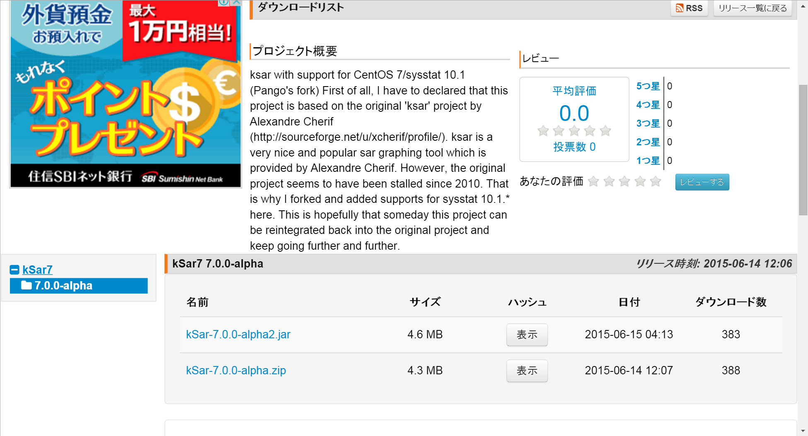
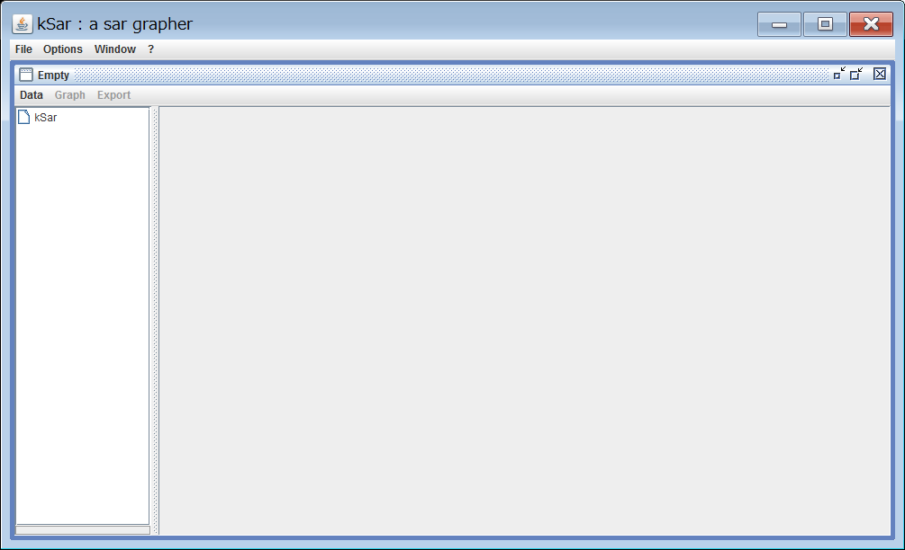
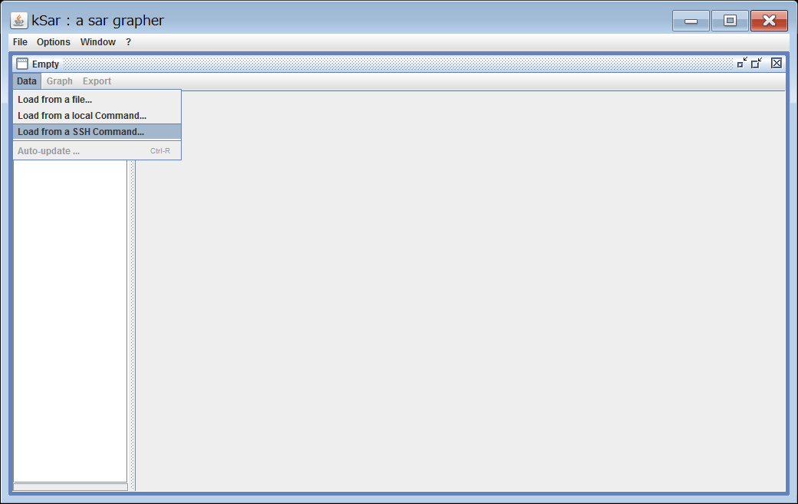
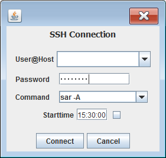

kSar7 による sysstat(sar) 情報のグラフ表示
ｃ⌒っﾟдﾟ)っφ ﾒﾓﾒﾓ...
参考URL
kSar7 は CentOS7/sysstat v10系に対応するためのforkされたもの。他にもGitHubとかで kSar で検索すれば沢山出てくるので使いたいものを使えば良いと思う。
事前準備
Javaベースのアプケーションなので、実行するサーバにJavaをインストールする。(Java公式サイト)
kSar7 のダウンロード
kSar7のサイトから "jar" ファイルをダウンロードしてくる。※2016/2/12時点では kSar-7.0.0-alpha2.jar が最新だった。

kSar7 の実行
ダウンロードしてきた "jar" ファイルをダブルクリックし実行する。正常に起動すると下図ウインドウが表示される。

kSar7 によるグラフ表示
リモートへの接続
kSar7 では ファイル/ローカル/リモートのsarファイルを指定出来る。右上の "Data" から "Load from a SSH Command..." をクリック

認証情報とsarコマンドの入力
小ウインドウが表示されるので、対象となるサーバの情報 および sar コマンドを入力するだけ。
| sarオプション |
補足 |
| -A | 全項目のデータを取得(表示) |
| -f /var/log/sa/saXX | 対象ファイルの指定(XX=日付) |
| -s [hh:mm:ss] -e [hh:mm:ss] | 時刻指定(開始:終了) |

エクスポート
- グラフデータをPDFにエクスポートしようとしたけど、自分の環境ではうまくいかなかった。
- 右クリックで "Save As..." を選択した画像としての保存は出来た。
以上